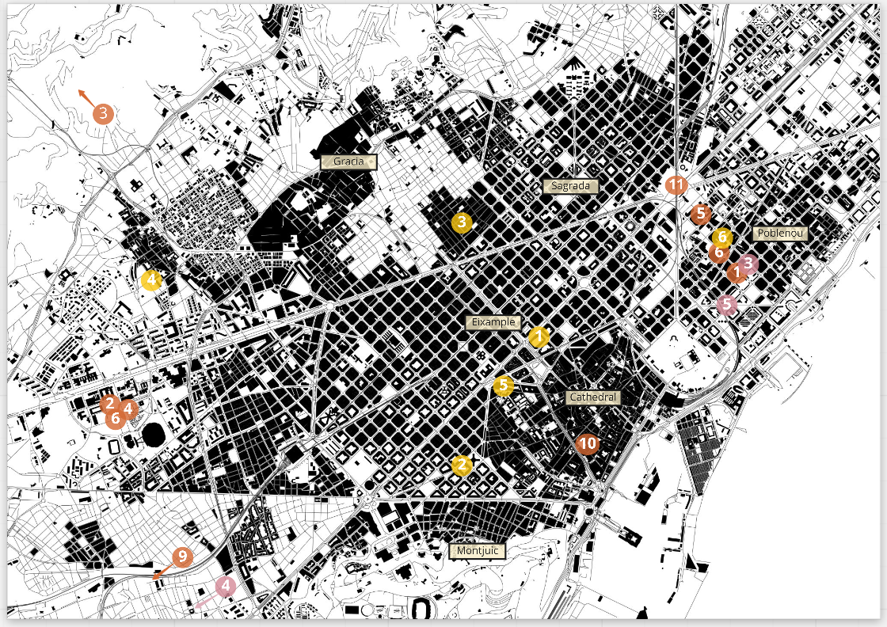
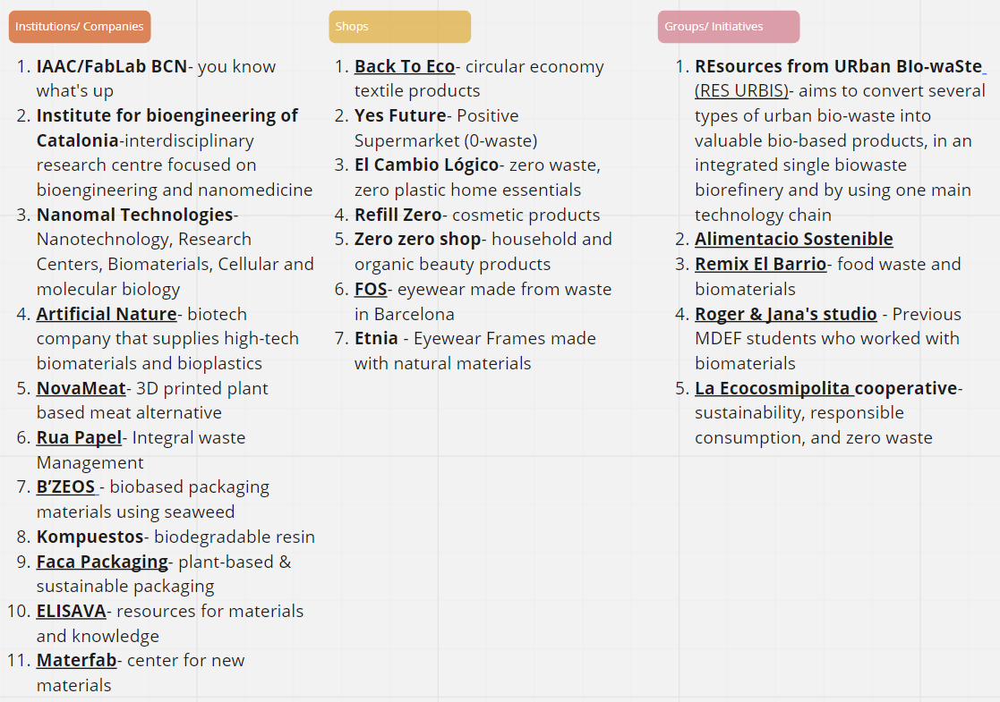
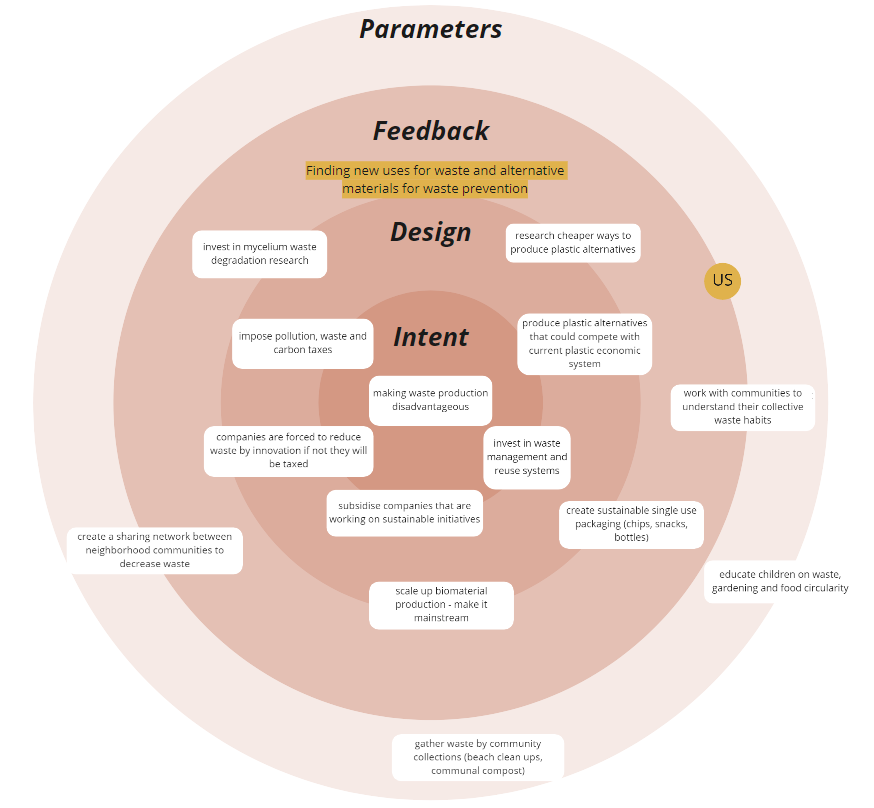
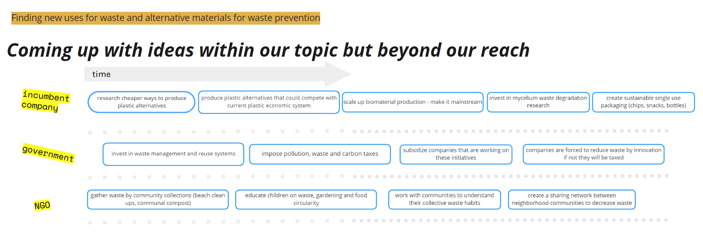
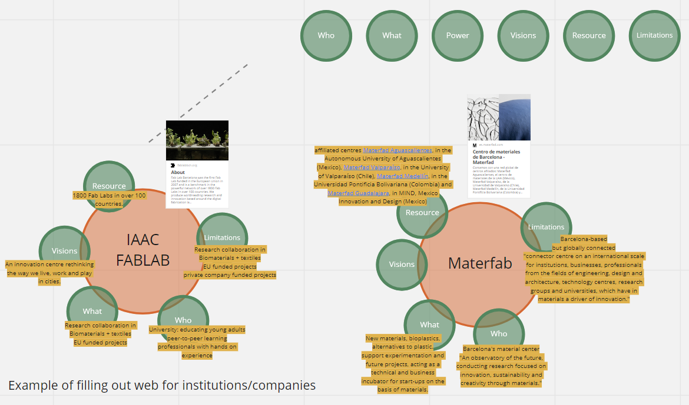
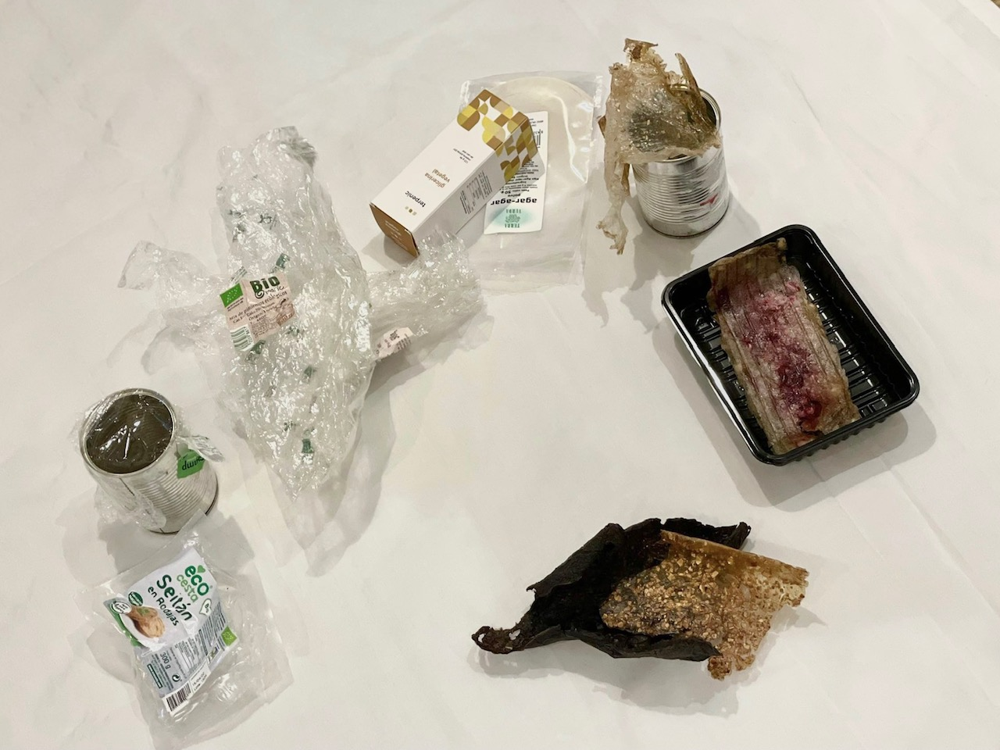

Design Within
With members from HOLON design Markel Cormenzana and Merce Rua, we took new approaches and lenses to understand design problems. Holon’s perspective involves shaping the everyday life of transitions. We learned about positioning ourselves in the community, and how it might happen. In terms of design, it may happen in the fashion of over, for, with, or within. In my landscape architecture schooling, I felt we had a lot of practice with designing for. Whether that be the client (human or natural), community, or individual. Focusing on what the needs of the “for” were. While I did think that was a useful perspective as it seemed very focused on others, the more we talk about designing with or within in the course, I see it as a more impactful way to design. With and within are designing much more with a first person perspective. There is a fine line between with and within, which we should strive to design within. I feel in order to do so, a person must be completely involved and understand surrounding factors at play.
Markel asked us to think about the role of design. It has many definitions depending on the person you ask and in what field, and it can play a role in decision making, projection, or affirmation. To me, design acts as decisions for how the world should be. In my perspective, nearly everything is designed in some way, and people have made these decisions (conscious or not) which have shaped the world. We try to make decisions based on what we think is right, or how we want our own personal world to look like. That is why I believe there is so much power in design. This thought led into our movement activities with Merce the following day
Body as a tool
On Wednesday, we did activities using our bodies as a tool. Merce informed us about how she had done work with theater and how the body could be used as a physical representation of our ideas in a way which we could visualize much better when presented with them directly. In a 3-D axis, we physically mapped ourselves with questions like: does design have power for change? Do we have agency or not? Is the world bad and getting worse or should we be hopeful? It was interesting to see where I placed myself along the axes along with where all my classmates were. Although as a collective group I think we all have similar ways of thinking in a lot of situations, it showed me none of us feel the exact same surrounding any of these bigger, intangible topics. What was especially insightful was the result of the question of whether the world was essentially on a downward spiral with no potential to change course. Two of the youngest members of the class stood at the end that agreed with this, while others, including older members of the class stood towards the more positive side. It makes me feel as though the younger generations feel the impending doom more seriously. Perhaps they feel that they face it more directly, and cannot feel detached from it. Although I am only 2 years older than my youngest classmates, maybe that is enough time for a change in mindset. That is something I worry about for every generation that is born in the present and near future, that they will have the stress of the burden of solving the world’s problems when the generations before them did not.


In order to understand using our bodies as tools, we created 4-D sculptures surrounding concepts in the education system. The group was divided into two, either actors or observers. I was in the group observing, which was a position I liked to be in because I could analyze how the group was moving and what decisions they were taking. As a group, we discussed the difference between the three sculptures they created, each one with the intent to create a sculpture towards a more idealized education system. What we realized was that the first one was an exaggerated or stereotypical view, the second one felt a bit forced or fake, and the third felt the most natural. Although the third one sit the best with us, as an observer I still felt that I wanted to change many things or that if I was an actor instead, I would have positioned myself in another way in relation to the others. Like Merce said, at some points I could not help but be bothered by some of the placements people chose to take. However, of course as an observer it is natural to want to view things differently than how the actors made their decisions. Overall, the exercise showed me how bodies can sometimes be more representative of how we are thinking than simply talking about things. By using a physical and human form, we could garner more emotion and information about the topic in a new way. It was helpful to be able to discuss the sculptures verbally after they had been created, pointing out what we thought the individual statues indicated.
Tasks
Continuously during the week, we were asked to work within our groups/collectives to see where we could involve community and which communities already existed out there. Doing the exercise of the mapping seen below was helpful in physically seeing where these groups of similar interests to ours exist in the city. It showed me that there is in fact an existing network, and that connecting with them would help us be much more powerful than working on our own from square one.
 Formulating ideas about how groups, companies, communities, etc could be actors for change was also helpful. Thinking big like this and then placing them on the onion diagram helped me visualize where each of these concepts might fit in. We had some doubts on where our intervention might be placed, but decided on somewhere between parameters (events) and feedback (correlation between elements of the system). Getting started on working on a new Miro board for our group was a great way to start diving deeper into our individual topics this week. One thing we found difficult as a collective was taking a step back and evaluating our intervention at a larger scale, which was the point of this week. We felt a bit frustrated at first because we were so ready to take our idea and run, but I think it was good for us to take a step back in order to really think about the purpose of our intervention and where it fits in with existing projects around us.
  